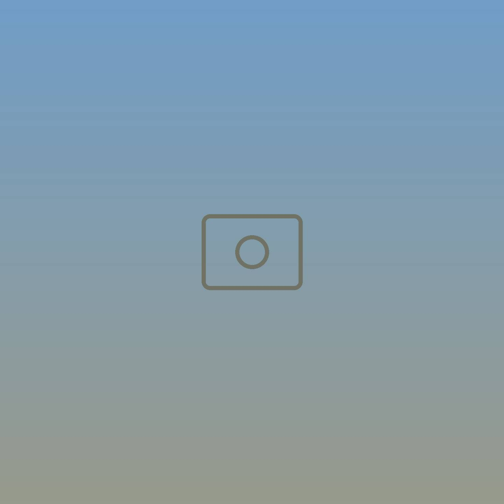
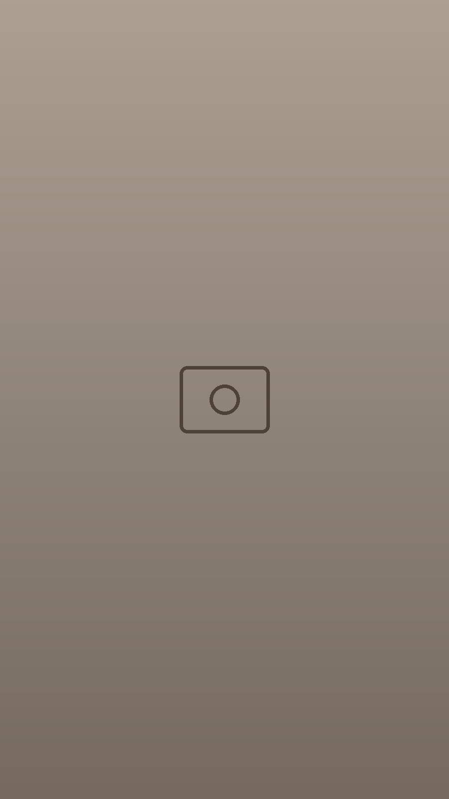
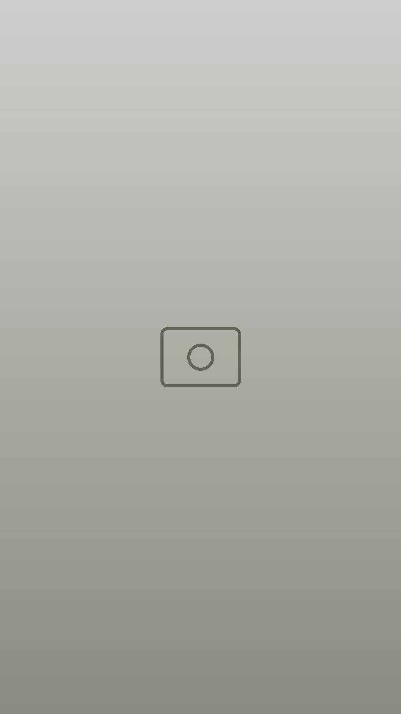
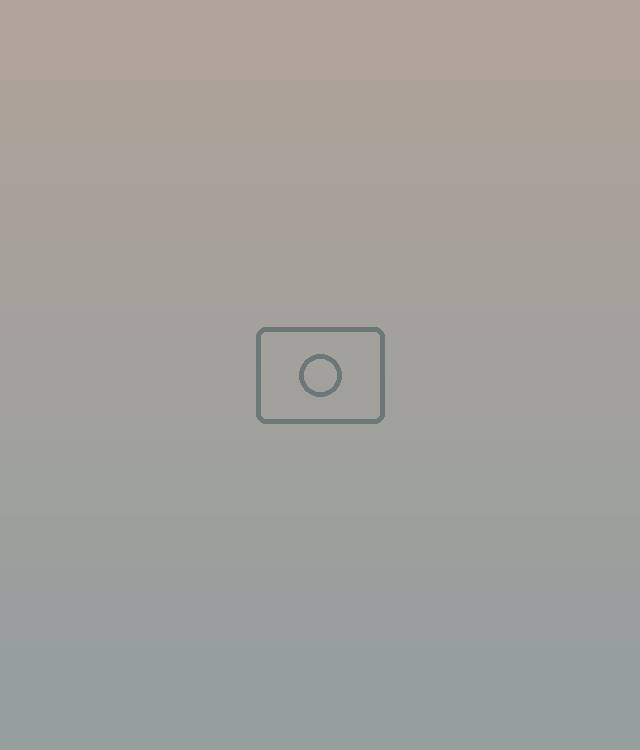
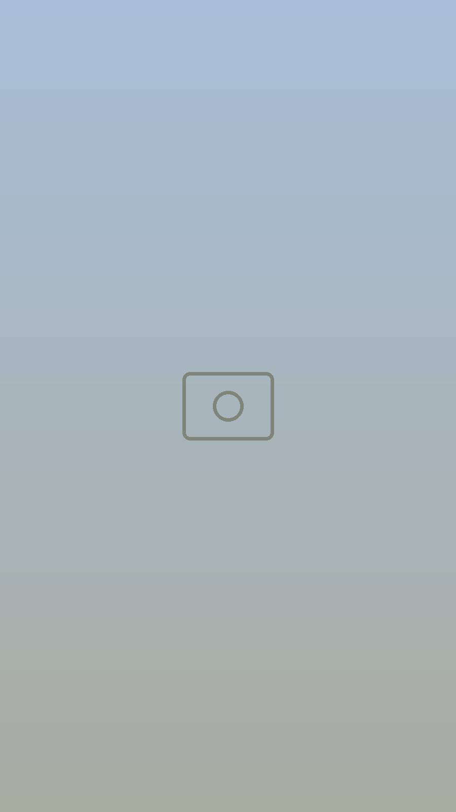

01 / La maison
Blanc, pin,
bleu.
Des volumes blancs posés sur la colline, une pelouse à l’ombre des pins parasols, la piscine et, partout, la mer. Une adresse pour s’échapper, quelle que soit la saison.
L’élégance, les pieds dans l’eau. La mer à perte de vue, jusqu’à l’île de la Galite.
Un refuge où l’on vient chercher le silence et la déconnexion, face à l’un des plus beaux panoramas de la côte.
01 / La maison
Des volumes blancs posés sur la colline, une pelouse à l’ombre des pins parasols, la piscine et, partout, la mer. Une adresse pour s’échapper, quelle que soit la saison.

02 / Nos suites
Une suite pour 4 personnes et quatre suites doubles : jusqu’à 12 personnes. Murs blancs, rotin, toiles graphiques et vue sur la mer.
03 / The View · Sunset
Rien à faire, tout à savourer : le soleil qui se couche derrière les pins, un arc-en-ciel sur la crique, l’eau claire juste en dessous.




04 / Ils sont venus
Une adresse hors du commun, impeccable, avec une vue superbe, très bien située et un accueil aux petits soins.Un hôte, après son séjour
« A small corner of paradise on the coast 💙 »
05 / Réserver
Les réservations se font uniquement via nos liens officiels. Une question sur les suites ou les dates ? Écrivez-nous.